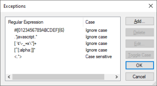

Lists the exceptions that must not be translated. Scope Level: Environment Description
When using Application Localization, there may be many string constants in an application that must not be translated. They can be marked as not translatable by preceding each one with the "!" (bang) sign. Doing so one at a time is usually an error-prone and time-consuming task. In many situations, you will notice that untranslatable strings share certain patterns (Regular Expressions (RegEx)). To name a few untranslatable string constant patterns:
This property is intended as a "development time saver" holding a list of regular expressions. If a string constant matches any of these expressions, it is considered as if it were preceded by a “!” symbol (i.e. not translatable). It will be considered when the value of the Translation Type Property is Run-time or Static. Examples are: HTML code, SQL Statements (using the standard create/update/delete/insert keywords), strings representing numbers, underlining, etc. Regular expression syntax is described below (it is a partial list of the default regular expressions):
GeneXus incorporates a list of default values displayed in the property. They can be deleted and changed, and new ones can be entered using the associated editor.  The Add, Delete, and Edit buttons will allow you to add, delete and change an exception. Case sensitivity can be changed with the Toggle Case button to determine the interpretation of uppercase and lowercase characters. To enter or edit an exception, read the document Regular Expressions (RegEx) that explains the rules for writing exceptions. Translating untranslatable string constantsHaving, for example, “<.*>” as a Translation Exception so that HTML (or XML) tags are not translatable will make the string constant “<Enter>” to be considered untranslatable too. To translate the constant, follow one of the alternatives below:
format(“<%1>”, “Enter”) Note that here the “Enter” constant is to be translated but not the “<%1>” constant.
ConsiderationsSince GeneXus 17 upgrade 4 the following exceptions were removed: create[[:blank:]]+.* delete[[:blank:]]+.*[[:blank:]]+from[[:blank:]]+.* insert[[:blank:]]+into[[:blank:]]+.* select[[:blank:]]+ .*[[:blank:]]+from[[:blank:]]+.* truncate[[:blank:]]+table[[:blank:]]+.* update[[:blank:]]+.*[[:blank:]]+set[[:blank:]]+.*
Run-time/Design-timeThis property applies only at design-time. How to apply changes
See Also
Translation Type Property |